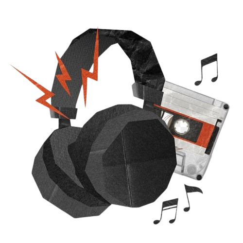

Somos el grupo 4-L. Esta página fue elaborada con el objetivo de poner en marcha los conocimientos adquiridos en el lenguaje de programación HTML y CSS. A lo largo del semestre, iremos publicando todos los proyectos que vayamos realizando, incluyendo los diagramas y algunas actividades fundamentales del taller. Cabe aclarar que esta no es una página profesional, sino una prueba creada por un estudiante con fines educativos.
En esta página se verán imágenes de las prácticas, proyectos y diagramas los cuales vayamos elaborando al pasar los períodos.
Sugerencias, quejas, opiniones o aportar algún otro proyecto o práctica comunicarse al siguiente contacto: 4LitaceElectronica@gmail.com